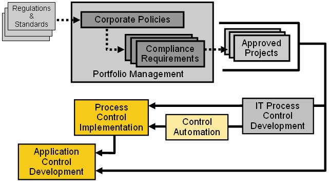

| Welcome to RUP for Compliance Management |
 |
|
The IBM® Rational Unified Process® for Compliance Management (RUP for Compliance Management), extends RUP with controls supporting general "Auditability". This includes:
The resulting process produces evidence necessary to support an audit. This can help demonstrate compliance to standards and regulations relating to software development. Note that this plug-in does not provide guidance specific to any standard or regulation. RUP for Compliance Management in ScopeThe diagram below sketches out key aspects of a governance workflow for general compliance management: Regulations and Standards affect Corporate Compliance Policy, which results in the development of Compliance Requirements. These requirements are addressed through different types of projects. The diagram emphasizes the ones supported by RUP for Compliance Management.  RUP for Compliance Management FuturesThis first product release can be used as-is to enable effective compliance management, but it does not provide complete treatment of this domain. Most notably, the following content is currently under investigation:
PLEASE NOTE:IBM's customer is responsible for ensuring its own compliance with legal requirements. It is the customer's sole responsibility to obtain advice of competent legal counsel as to the identification and interpretation of any relevant laws and regulatory requirements that may affect the customer's business and any actions the customer may need to take to comply with such laws. IBM does not provide legal advice or represent or warrant that its services or products will ensure that the customer is in compliance with any law. |